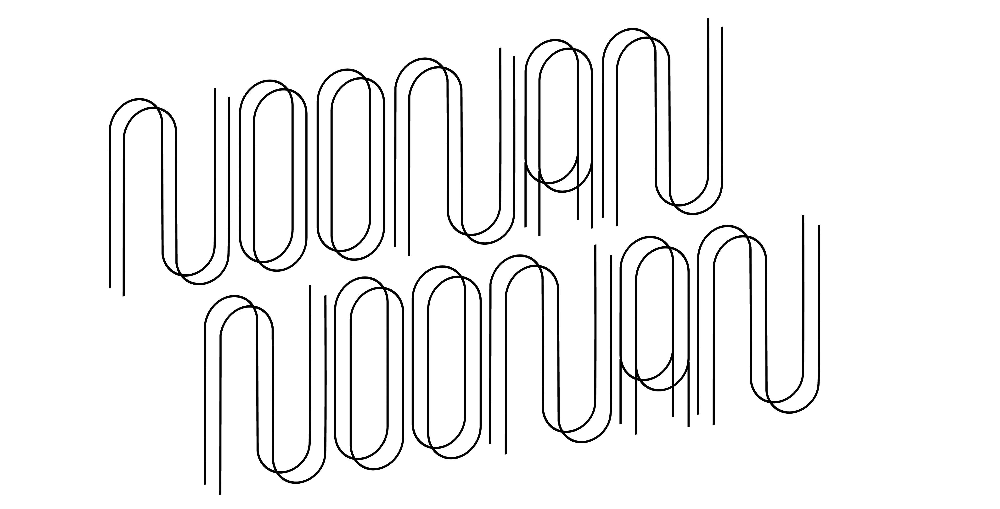
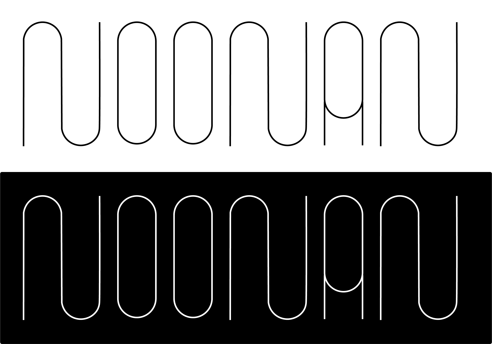
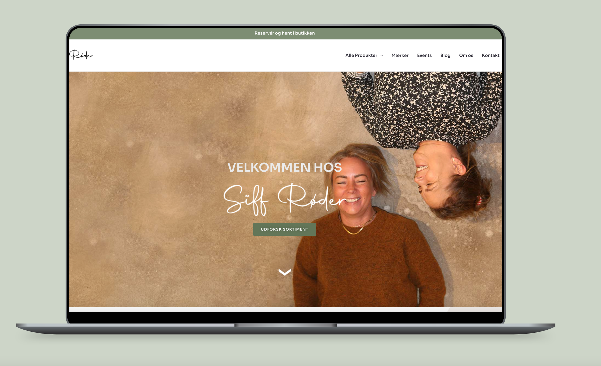
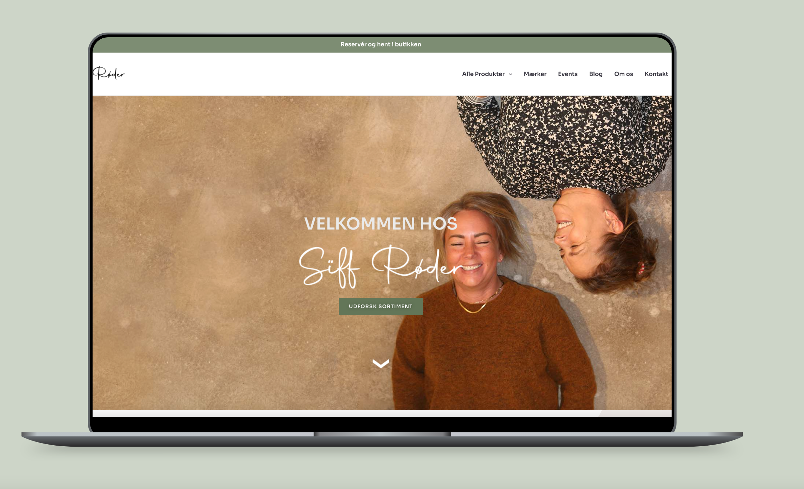

CUSTOM TYPE
DISPLAY FONT
NOONA
In this project I have made a custom display font.
//One form, infinite possibilities.// Noona is a variable
display font that can be used to personalize a design. The soft
shapes of the font gives a welcoming and playful expression. The
font is inspired by including only round and oval circles and
the entire font is built around one shape. The font can be
changed at its grade.
 
